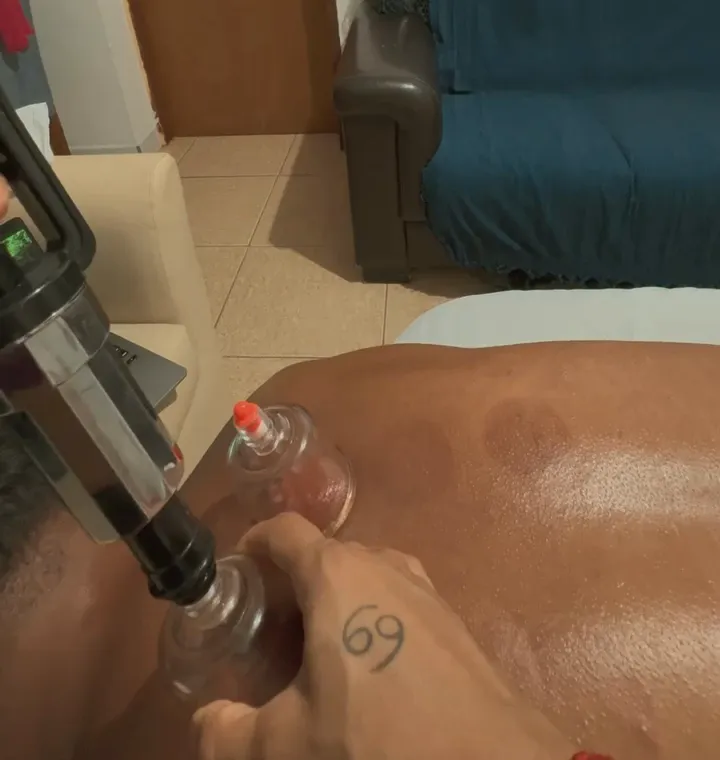
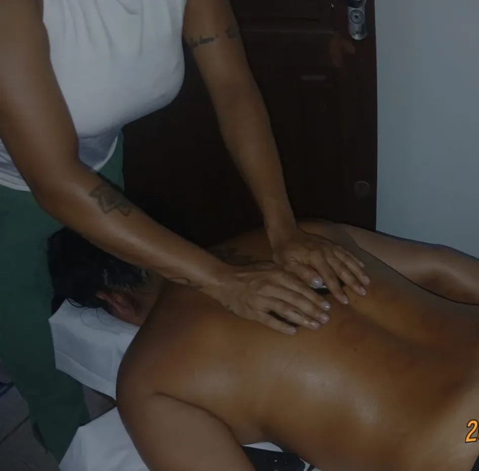

Ventosaterapia em Florianópolis: destravar o que a massagem sozinha não solta
Ventosaterapia em Florianópolis combinada com massagem terapêutica e pedras quentes. Copos de sucção que puxam, em vez de apertar, para soltar costas, ombros e pernas.
- Fixa ou deslizante
- Combinada com massagem
- Intensidade ajustada
- Hora marcada


O que é ventosaterapia
Ventosaterapia é uma técnica que usa copos com sucção sobre a pele para levantar o tecido, aumentar a circulação local e ajudar a soltar músculos e fáscias tensionados. É uma prática antiga, usada em várias culturas, e hoje é bastante procurada por atletas e por quem sofre com tensão muscular crônica.
Na massagem comum, as mãos empurram o tecido para baixo. Na ventosa, a sucção puxa para cima. Essa diferença cria uma sensação de alívio muito particular, principalmente em costas e ombros que parecem "colados".
Na sessão da Karol, a ventosa quase sempre vem junto da massagem terapêutica e, muitas vezes, das pedras quentes.

Ventosa fixa e ventosa deslizante
Ventosa fixa
Os copos ficam parados alguns minutos sobre os pontos de maior tensão. É a que costuma deixar as marcas arredondadas.
Ventosa deslizante
Com óleo na pele, o copo desliza pelas costas como uma massagem ao contrário. Marca menos e é ótima para grandes áreas.
Combinada com pedras quentes
O calor prepara o músculo e a ventosa termina de soltar. A combinação preferida para costas muito travadas.
Intensidade ajustável
A sucção é regulada. Quem tem pele sensível ou medo das marcas pode começar mais leve.
Por que a ventosa deixa marcas roxas
As marcas redondas, de rosado a arroxeado, aparecem porque a sucção traz sangue para perto da pele e alguns capilares bem pequenos se rompem. Não é um hematoma de pancada e costuma não doer.
Em geral as marcas somem entre 3 e 10 dias. Elas costumam ser mais escuras nas primeiras sessões e nas regiões mais tensas, e mais claras com o tempo.
- Tem casamento, ensaio ou praia? Avise: dá para usar a técnica deslizante ou evitar áreas visíveis
- Proteja as marcas do sol forte nos primeiros dias
- Beba bastante água depois da sessão
Para quem a ventosaterapia é indicada
Costas e ombros travados
A queixa mais comum. A ventosa alcança camadas que a mão sozinha demora a soltar.
Quem pratica esporte
Corrida, surf, academia, beach tennis. Ajuda na recuperação depois de treinos intensos.
Tensão por estresse
Aquela musculatura que endurece em fases de pressão no trabalho.
Sensação de corpo pesado
Muitas clientes descrevem a sensação de leveza logo depois.
Suas costas pedem ventosa?
Mande uma mensagem e a Karol avalia se é indicada para você.
Quem não pode fazer ventosaterapia
A ventosa é segura quando bem indicada. Em alguns casos ela precisa ser adaptada ou evitada.
| Situação | Orientação |
|---|---|
| Uso de anticoagulante ou distúrbio de coagulação | Evitar, ou só com liberação médica |
| Gestação | Evitar na barriga e na lombar; avise sempre |
| Pele queimada de sol, feridas ou irritação | Não aplicar na região |
| Varizes importantes ou trombose | Não aplicar nas pernas |
| Febre ou infecção ativa | Remarcar a sessão |
Como é a sessão de ventosaterapia
Conversa
Onde dói, histórico de saúde, contraindicações.
Preparo
Massagem ou pedras quentes para aquecer a musculatura.
Ventosa
Fixa, deslizante ou as duas, com intensidade ajustada.
Finalização
Massagem leve e orientações de cuidado.
Ventosaterapia na prática


De onde vem a ventosaterapia
A ventosaterapia é uma das práticas terapêuticas mais antigas de que se tem registro, usada há milhares de anos em diferentes culturas, como a medicina tradicional chinesa, o Egito antigo e o Oriente Médio. Antigamente os copos eram de bambu, chifre ou vidro aquecido com fogo.
Hoje a técnica é feita com copos de acrílico e uma bomba manual, que permite controlar a sucção com precisão, sem fogo e com muito mais segurança. Ganhou visibilidade mundial quando atletas olímpicos apareceram com as marcas redondas nas costas.
Cuidados depois da ventosaterapia
Beba bastante água
Ajuda o corpo a se recuperar.
Evite sol forte nas marcas
Nos primeiros dias, proteja a pele.
Banho morno
Água muito quente ou gelada logo depois não é o ideal.
Nada de treino pesado no mesmo dia
Deixe a musculatura descansar.
Observe a pele
Marcas somem sozinhas; bolhas ou dor forte não são esperadas e devem ser relatadas.
Respeite o intervalo
Espere as marcas clarearem antes de repetir na mesma região.
Ventosaterapia para quem treina em Florianópolis
Corredores da Beira-Mar, surfistas do Sul da Ilha, atletas de beach tennis e frequentadores de academia estão entre os que mais procuram ventosa. A técnica ajuda a soltar a musculatura depois de treinos intensos e dá aquela sensação de corpo leve para voltar a treinar.
O melhor momento é no dia seguinte ao treino mais pesado da semana, e nunca logo antes de uma competição. Em época de provas, sessões de ventosa deslizante, que marcam menos, costumam ser as preferidas.
Karoline Maia, terapeuta corporal e trancista
Karoline Maia é a fundadora da Karoline Maia Terapias e atende pessoalmente cada cliente, da massagem terapêutica, ventosa, pedras quentes e Reiki às tranças box braids e boho. Todas as fotos deste site são de atendimentos reais feitos por ela.
Atendemos com hora marcada em toda a Grande Florianópolis. Telefone e WhatsApp: (48) 99145-5759. Instagram: @karoline_maia_terapias.

Ventosaterapia perto de você
Massagem em São José
Kobrasol, Campinas, Barreiros e Forquilhinhas.
Ver páginaMassagem em Palhoça
Pagani, Pedra Branca, Ponte do Imaruim.
Ver páginaMassagem no Centro de Florianópolis
Centro, Agronômica, Trindade e Itacorubi.
Ver páginaMassagem no Campeche
Sul e Leste da Ilha: Rio Tavares, Morro das Pedras, Lagoa.
Ver páginaMassagem em Canasvieiras
Norte da Ilha: Jurerê, Ingleses, Cachoeira.
Ver páginaMassagem no Estreito
Continente: Coqueiros, Capoeiras, Balneário.
Ver páginaToda a Grande Florianópolis
Biguaçu, Santo Amaro e demais cidades.
Ver páginaPerguntas sobre ventosaterapia
Ventosaterapia dói?
Na maioria dos casos não. A sensação é de pele sendo puxada e de alívio. A intensidade é ajustada ao seu conforto.
Quanto tempo as marcas ficam?
Em geral de 3 a 10 dias, variando com a pele e a tensão da região.
Quantas sessões de ventosa preciso?
Muita gente sente diferença já na primeira. Para tensão crônica, algumas sessões próximas no início trazem mais resultado.
Quanto custa ventosaterapia em Florianópolis?
Depende de ser sessão só de ventosa ou combinada com massagem. Receba o valor pelo WhatsApp.
Ventosa ajuda na dor nas costas?
Ajuda a soltar a musculatura tensa que costuma causar ou piorar a dor. Em dor forte, persistente ou com formigamento, procure também avaliação médica.
Destrave suas costas.
Agende sua sessão de ventosaterapia pelo WhatsApp.